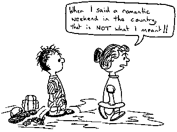
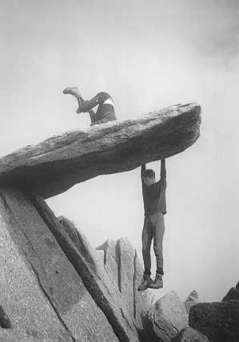

I came to Arctic Scandinavia to do science, not to climb. In my interview for the job, the boss asked "Are you interested in mountaineering?". He had been looking at my CV which contains more information about my climbing involvement than about academic qualifications and assuming he was about to enthuse about the endless possibilities for climbing and mountaineering in Arctic Sweden I eagerly said, "YES! very!".
"Well!... we'll have none of that during your stay at Abisko" was the barked reply, "What if you twisted your ankle...blah blah...the mountains can be jolly dangerous...blah blah blah...last year there was a person who...blah blah...so we don't want people wandering off into the wilderness ...blah blah....and thats final."
Of course my harness, boots and sensible hat were the first things that were packed and as soon as I arrived I went in search of potential partners in crime. Fortunately I was in luck. The local 'Touriststation' (a collection of buildings in the middle of nowhere with a hotel, hostel and shop) was home to many climbers and one fine weekend I set off for the mountains of Norway with a man I had never met before.
The mountains of Arctic Norway were a very pleasant surprise for me after the rounded hills of Sweden, smoothed by the enormous ice sheet that covered the area in the dim and distant past. Eifjord, our chosen destination, was like nothing I had ever seen before. Sheer cliffs plunged down from summits so pointy that, if one could clamber up the bare slabs of glacier carved granite, barely enough room could be found on top to stand on. They were like the mountains in fairy tales and those that every child draws capped by a jagged patch of snow.
The following day we were to climb Stetind, one of the most famous mountains in Norway and one which has only recently become a 'roadside crag'. In 1992 a road was built including a two kilometre long tunnel that passes right through the mountain. Before that a 4 day walk in was needed to reach the 1300m high monolith of granite. There is a 50 pitch climb to the summit that actually starts on the road, but we were to do the shorter, easier and more famous South Pillar.
We walked for a couple of hours and camped on the only piece of flat land in the vicinity of the mountain. It was near a tarn half covered with snow and ice and, after our exceedingly brisk walk up, I ripped all my clothes off and jumped in to cool off. This was accomplished almost instantaneously and soon I was shivering on a nearby rock.
The camp was in one of the most beautiful places I have ever been. It was surrounded by sheer, granite slabs with tiny glaciers hanging off the mountains anywhere that the angle of the rock allowed snow and ice to grip on. In the distance were fjords, mountains, fjords and mountains stretching as far as the eye could see. The arctic sun set briefly but it did not get dark and I could hear the climbing calls of a pair on the pillar until past 1am.
The climb starts in what is known as the 'royal box'. There are three 'amphitheatres' of slabs beside the south pillar and the royal box is at the top of the first one. A precarious scramble over scree slopes perched worryingly over the steep, wet and not-very-nice-to-slide-down first amphitheatre led to the royal box. The alternative is an extra 7 pitches of E1.
The first eight pitches of the south pillar are easily angled rock at between V Diff and VS. Climbing is on perfect slabs and route finding is easy. Arctic Norway had put on her very best behaviour for us with views unobstructed by cloud and a hot sun that made us curse carrying warm clothes and waterproofs. I have to admit that I went so mad on photography with my two quid Eric's Caf car boot sale camera that John refused to take any more photos of me with it. It wasn't only because they were usually of me in a pseudo-amusing pose or with a funny face but because, as he said " It will kill me if those pictures come out, my camera cost 3000 krona (£300)". In the end the Eric's Caf camera was able to boast a motley collection of silly shots, posy photos and spectacular scenes, some of which I hope will be good enough to accompany this article.
On a couple of the slabby pitches the inviting belay ledge lay only meters above me as I strained at the rope and John called "You've run out of rope!" we ended up scuttling up together, separated by 50 metres of rope, in order to finish the pitch . After the first 8 pitches many climbing parties traverse out on an easy ramp and scramble to the top the easy way....but not us! All the way up the climb I was taking it for granted that John (whose idea it was to climb the mountain in the first place) would be leading the last three pitches of E1 5c, but after our leisurely lunch spent sweating and roasting on a huge ledge 800m above the boulders below he announced that I would be leading. When I saw the pitches that were to be mine I was overjoyed. The climbing was up beautiful granite cracks and corners with amazing views and exposure which I enjoyed immensely. There were a few boulders at the top of the third steep pitch and after scrambling over a few John stopped. "Is that the top?" I asked, not really believing that it could be. I scrambled up and onto the rock and there I was... on the top of Stetind! There is absolutely no doubt that you have reached the summit because the top of the mountain seems to have been removed, sliced off like the top of a boiled egg. Sheer rock sides give way to a perfectly flat summit about 100m long and 20m wide. The obligatory mound of snow capped the peak and looked very picturesque in our summit photos. Unfortunately it was at this point I discovered one of the drawbacks of the Eric's Caf camera ,(the others were discovered after the film was developed) it had no self timer. Our summit photo consists of a panorama of shots with me in one and John in .html.
When I looked round from wistfully looking out over mountains, fjords and forests I saw John rooting round in a pile of boulders. He emerged with a visitors book. "Strange thing to find on a pointy monolith of granite," thought I as I engraved our names into the paper with the tip of a dysfunctional biro. The pencil that had served so well for generations of climbers had been stolen and replaced by a biro that did not work. I hope that the climber who committed this atrocity gets his just desserts next time he has to take an important telephone message! Perhaps the next people to climb Stetind will bring a pen and ink over our engraved inscription- "The best climb I've ever done ever ever, in the whole world, ever!".

by Paul Palfreyman

David Jones and Toby Speight playing on the Cantilever Stone
Photo: David Jones